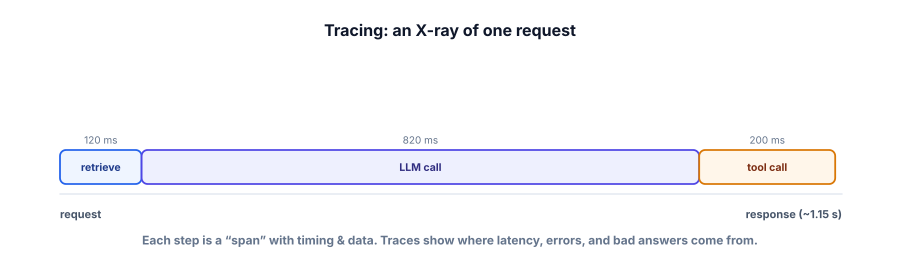

Tracing & observability
When a RAG pipeline or agent gives a bad answer in production, “the model messed up” isn’t a diagnosis. Tracing gives you an X-ray of every request — what was retrieved, what prompt was sent, what each step cost — so you can actually find and fix the problem.
Why LLM systems are hard to debug without tracing
An LLM feature is rarely one call. It’s a chain: retrieve, build a prompt, call the model, maybe call a tool, post-process. It’s also non-deterministic and depends on inputs you don’t see (the retrieved chunks, the exact assembled prompt). So when something goes wrong, the final answer alone tells you almost nothing. Observability — and specifically tracing — fixes this by recording each step of each request, so you can replay exactly what happened and see where it broke.

Observability is the ability to understand what your system is doing from the data it emits. A trace is the full record of one request; a span is one step within it (a retrieval, an LLM call, a tool call) with its inputs, outputs, timing, and cost. Monitoring aggregates these into dashboards and alerts (latency spiking, error rate up, cost climbing) so you learn about problems before users complain.
What to capture per request
- Inputs & outputs of each step — the query, the retrieved chunks, the exact prompt sent, the model’s raw response. This is what lets you reproduce a failure.
- Timing per span — to find latency bottlenecks (Track 8).
- Tokens & cost per call — to catch runaway spend.
- Errors & retries — what failed and how it was handled.
- Metadata — request id, user/session, model and prompt version — to slice and compare.
You can start with plain logging before adopting a tool. Capture each span with timing and data.
import time, json
def traced_rag(query, request_id):
trace = {"id": request_id, "query": query, "spans": []}
def span(name, fn):
t0 = time.time()
result = fn()
trace["spans"].append({"name": name, "ms": round((time.time() - t0) * 1000),
"output_preview": str(result)[:120]})
return result
chunks = span("retrieve", lambda: retrieve(query)) # what did we fetch?
prompt = span("build_prompt", lambda: build_prompt(query, chunks))
answer = span("llm", lambda: call_model(prompt)) # exact prompt + answer
log(json.dumps(trace)) # now every request is replayable & measurable
return answer
# Free, open-source tracing tools (Langfuse, Phoenix) do this with nicer UIs + dashboards.With this, a bad answer is debuggable: open the trace, see that retrieve returned the wrong chunk (a retrieval bug, Track 3) versus a good chunk the model ignored (a grounding bug). Free tools like Langfuse or Arize Phoenix add dashboards, but the idea is exactly this.
- LLM features are multi-step and non-deterministic — the final answer alone can’t be debugged.
- A trace records one request as timed spans (retrieve, prompt, LLM, tool) with inputs/outputs/cost.
- Capture the exact prompt and retrieved context — that’s what makes failures reproducible.
- Monitor & alert on latency, cost, and error rates to catch problems before users do.
- Start with plain logging; free tools (Langfuse, Phoenix) add dashboards later.
A user reports your RAG bot gave a wrong answer. You have full tracing. What’s the fastest path to a diagnosis?
1. List the spans you’d capture for a tool-using agent request, and one piece of data to log for each.
2. Why is logging the exact assembled prompt (not just the user query) essential for debugging?
3. Logging full inputs/outputs can capture sensitive user data. What’s the tension, and how do you handle it?
▸ Show solutions & reasoning
1. For an agent: plan/think (the model’s reasoning), each tool call (name + arguments), each tool result (output, truncated), and the final answer; plus per-step timing and tokens. Logging the tool arguments and results is what lets you see why a step failed or looped (Track 4’s “read the trace”).
2. Because the model only ever acts on the assembled prompt, not your mental model of it. Bugs hide in assembly — a missing system message, the wrong retrieved chunks, a template error, truncation. If you only log the user query, you can’t see what the model actually received, so you can’t explain its output. The exact prompt is the ground truth of what happened.
3. The tension: detailed logs are gold for debugging but may contain PII (names, emails, account data) — a privacy and compliance risk (Track 7). Handle it by redacting/masking sensitive fields before logging, restricting access to logs, setting retention limits, and sampling rather than storing everything forever. You want enough to debug without turning your logs into a liability. Observability and privacy must be designed together.
Tracing isn’t just for firefighting — it’s the data source that powers everything else in this track. Your production traces are your richest supply of golden-set candidates: real queries, with the exact context and the actual (sometimes wrong) answers. Mining traces for failures, then promoting those into your golden set (Lesson 6.2), is how your offline evals stay representative. Traces also let you run online evals at scale — sample production traces and run an LLM-as-judge over them to track quality trends without waiting for user feedback. And they’re how you debug agents, tune latency (Track 8), and audit safety incidents (Track 7).
So the mature setup is a loop: instrument everything → monitor dashboards and alerts → when quality dips or a user complains, open the trace and diagnose the exact span → fix it and add the case to the golden set → the offline eval now guards against it. Free, open-source tools (Langfuse, Arize Phoenix, and OpenTelemetry-based stacks) give you this with searchable traces, latency/cost dashboards, and judge integrations — but you can begin today with structured logging, which is better than the most beautiful dashboard you never built. The principle: you cannot improve, debug, or trust a system you cannot see. Observability is what makes an LLM product operable rather than mysterious.
With observability in place, you can make your evals automatic — a gate that runs on every change, like tests for code. Next: regression-testing prompts.